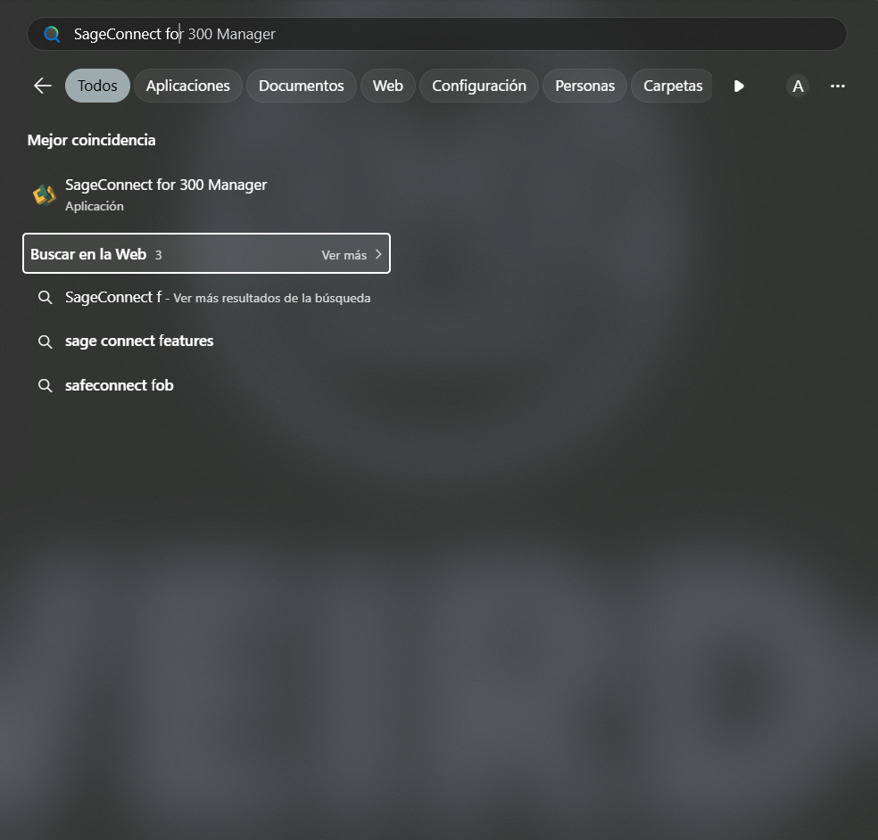
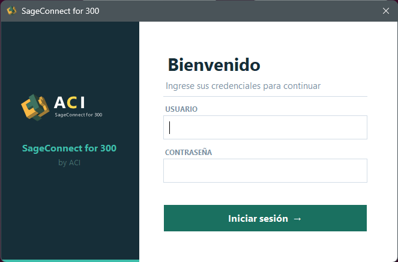

Capítulo 02 · Acceso
Primer arranque e inicio de sesión
Una vez completada la instalación, llega el momento de abrir el Manager por primera vez. Son dos pasos muy cortos: localizar el acceso y autenticarse.
§ 01 Localizar el Manager
La forma más rápida es usar el buscador del menú Inicio. Escribe
SageConnect for 300 Manager y selecciónalo de la lista
de Mejor coincidencia.
Alternativa. Si marcaste la opción correspondiente
durante la instalación, encontrarás un acceso directo también en el
escritorio.

§ 02 Inicio de sesión
Al abrir el Manager aparece una pantalla sobria con dos campos:
- Usuario
- Contraseña
Tras completar ambos, pulsa Iniciar sesión → para acceder al escritorio principal.
Credenciales por defecto. Si nunca modificaste las
credenciales, consulta la documentación interna de ACI para el usuario
inicial. Lo habitual es cambiarla en el primer arranque desde
Configuración → Sage 300 → Cambiar contraseña de acceso.

Siguiente paso. Ya dentro del Manager, revisa el
capítulo de configuración inicial
para entender el escritorio y los intervalos de sincronización.